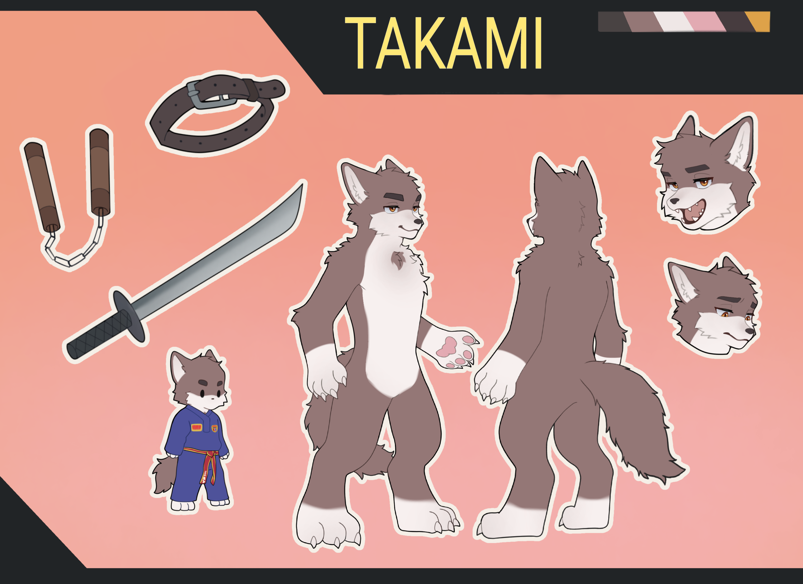

2023
That was a long time since I join Furry Fandom in Viet Nam. I saw that so many friends have their sheet of his Fursona. So in a few second of thinking, I decided to take a reference sheet commission drawn by Phong Phởn

In the next few month, I found that we can have more than one Fursona. Then this another mine Fursona borned, his name is Takami, also the sheet is drawn by Không Phải Flippy.
